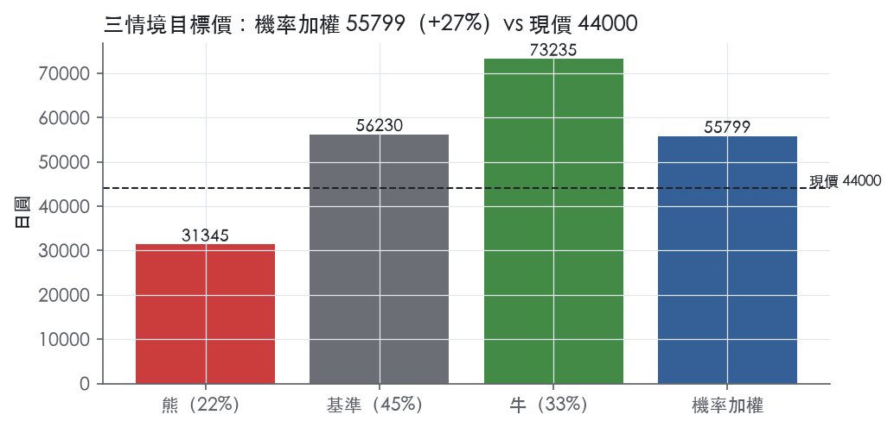
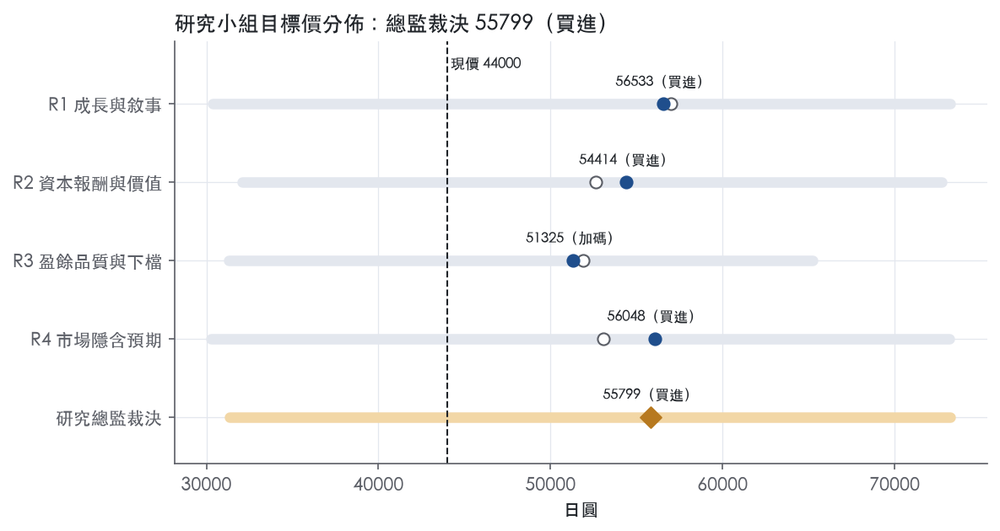

評等總表 › 未分類 › 6146.T
ディスコ（6146.T）
出貨與預收款撐近端，倍數持平看多｜評等 買進｜目標價 55799
評等歷史與財報快評
| 報告日 | 評等 | 目標價 | 當時股價 | 超額報酬 |
|---|---|---|---|---|
| 2026-11-16 | 買進 | 55,799 | 44,000 | +20.3% |
| 評等 | 買進 |
| 12 個月目標價 | 55799 日圓 |
| 現價 | 44000.00 日圓（2026-11-16） |
| 預期報酬 | 股價 +26.8%＋股息 1.3%＝總報酬 +28.1%；日股門檻 7.8%，超額 +20.3% |
| 估值方法 | EV/EBITA 20.6x，套在未來四季的EBITA |
| 三情境 | 熊 31345／基準 56230／牛 73235 |
| 研究流程 | 四位研究員兩輪辯論＋研究總監裁決 |
| 資料來源 | EDINET、TDnet、J-Quants、Yahoo、FRED（全免費） |
目錄
第一章 結論摘要
出貨與預收款撐近端，倍數持平看多（研究總監裁決，四位研究員兩輪辯論後）
評等 買進｜12 個月目標價 55799 日圓（總監三情境機率加權 56367 與研究員中位數 55231 各半）｜現價 44000.00（2026-11-16）
預期報酬：股價 +26.8%＋股息 1.3%＝總報酬 +28.1%。日股門檻 7.8%，超額 +20.3%。
估值方法：EV/EBITA 20.6x，套在未來四季的EBITA。三情境：熊 31345（22%）／基準 56230（45%）／牛 73235（33%）。
什麼會讓研究總監改變看法：Q3 短信 4–12 月累計出貨低於 434.20B，或契約負債自 79.62B 轉降且存貨續增，我轉中性並把熊升為主情境；「業績予想のお知らせ」的 4–12 月營業利益率若低於 45%，y1 營益率下修至 R3 的 45%。
投資論點
- 出貨領先營收：上半年出貨年增 37.2%，契約負債升到 79.62B，公司未來一年營收可成長 22%。
- 倍數維持不打折：TSMC 集中度已被股價消化，一年後市場會維持 20.6x 的倍數。
- 矽週期反轉風險：出貨若連兩季年減、契約負債轉降，盈餘與倍數會同時下修。
關鍵數字
| 過去四季（實際，FY2027Q2） | 未來四季 | 第 5–8 季 | 第 9–12 季 | |
|---|---|---|---|---|
| 營收（B） | 499.4B | 609.3B | 658.0B | 697.5B |
| 營收成長 | 22.2% | 22.0% | 8.0% | 6.0% |
| 營業利益率 | 44.6% | 46.0% | 45.0% | 43.0% |
| EPS（日圓） | 1470.55 | 1880.97 | 1987.98 | 2013.45 |
| EPS 成長 | 26.6% | 27.9% | 5.7% | 1.3% |
| 每股股息（日圓） | — | 0.00 | 0.00 | 0.00 |
| P/E（現價） | 29.9x | 23.4x | 22.1x | 21.9x |
| 股息殖利率（現價） | 1.3% | — | — | — |
過去四季為申報數字；預測為研究總監的假設、程式計算。倍數與殖利率都用現價計算，用來看現價對應各期獲利的高低。
三情境
| 情境 | 機率（歷史） | 故事 | 未來四季營收成長 | 第 5–8 季營益率 | 倍數 | 目標價 | 股價漲跌 |
|---|---|---|---|---|---|---|---|
| 熊 | 22%（21%） | 對應風險表第 1 條矽週期反轉與第 2 條 TSMC 調整節奏：出貨連兩季年減、契約負債轉降，盈餘與倍數雙殺；總經對應美國下行 GDP 0.3；零債務、現金及び預金 342.41B 無財務壓力；資本支出隨基準回 6.7% | 6.0% | 37.0% | 14.0x | 31345 | -28.8% |
| 基準 | 45%（46%） | 出貨與契約負債撐住 NTM 成長 22%、營益率 46%，Q5–Q8 降至 8% 仍成長，市場一年後不再把 NTM 當峰值，trailing 倍數持平；日圓走本行 153 | 22.0% | 45.0% | 20.6x | 56230 | 27.8% |
| 牛 | 33%（33%） | HBM 與先進封裝延長擴產至 FY2028，一年後 LTM 仍在上升段，倍數略高於持平但低於 P50；總經對應美國上行，匯率取本行 153 不給匯率紅利 | 32.0% | 48.0% | 24.0x | 73235 | 66.4% |
目標價由程式依研究總監的驅動與倍數計算；機率由研究總監給定。括號內是歷史頻率：把這檔股票過去十年 12 個月報酬的波動形狀，置中在基準情境，結果落在各情境附近的比例。

四位研究員用不同方法各自估值，回應研究總監的質疑後交出第二輪，最後由總監逐點裁決。各研究員的主張見第七章，裁決理由見第八章，完整論證見《研究底稿》。
| 立場（一輪→二輪） | 加權目標價（一輪→二輪） | 評等（一輪→二輪） | 第二輪倍數 | 熊～牛目標價 | |
|---|---|---|---|---|---|
| R1 成長與敘事 | 看多→看多 | 56995→56533 | 買進→買進 | 21.0x | 30350～73235 |
| R2 資本報酬與價值 | 看多→看多 | 52624→54414 | 加碼→買進 | 22.0x | 32097～72757 |
| R3 盈餘品質與下檔 | 看多→看多 | 51879→51325 | 加碼→加碼 | 20.6x | 31279～65218 |
| R4 市場隱含預期 | 看多→看多 | 53076→56048 | 加碼→買進 | 20.6x | 30284～73154 |
| 研究總監裁決 | 看多 | 55799 | 買進 | 20.6x | 31345～73235 |
目標價由程式依各自的驅動與倍數計算；評等＝機率加權總報酬 − 日股門檻。
第二章 業務概況
公司做什麼、賣給誰
迪思科（DISCO，6146.T）是一家以「切（Kiru）、削（Kezuru）、磨（Migaku）」精密加工技術為核心的半導體後段製程設備與耗材廠商。公司及子公司23家、關聯企業2家構成集團，主要從事半導體製造裝置（精密加工裝置）與精密加工工具（消耗品）的製造、銷售，以及相關保養服務。產品線包括切割機（Dicing Saw）、雷射切割機（Laser Saw）、研磨機（Grinder）、拋光機（Polisher）、表面平坦化機（Surface Planer）等裝置，以及切割刀片（Dicing Blade）、研磨輪（Grinding Wheel）、乾式拋光輪（Dry Polishing Wheel）等耗材。客戶主要是半導體與電子零件的設計、製造業者，集中在高科技產業鏈。公司商業模式不只賣機台，而是透過裝置、耗材、應用技術（Application）及售後服務四個要素，為客戶的加工課題提供整體解決方案，其中免費的試削（Test Cut）是整個商業模式的入口。
業務分部與產品
公司揭露僅有單一報告分部，年報與中間報告均未按產品線拆分營收；FY2026 和 FY2025 皆註明「因屬單一報告分部，省略記載」。因此裝置與耗材各自佔營收比重，10-K（有報）未揭露。公司採「Fab Important戰略」，刻意自行保有製造機能而非走Fabless路線，理由是開發與製造一體化可加快PDCA、對客戶客製化需求反應更快、並能長期積累製程know-how、降低地緣政治與交期波動風險。研發方面FY2026研發費用總額34.16B日圓（抄：有價證券報告書 FY2026 研究開発活動），聚焦磨料技術、雷射技術、軟體技術工程師招募，並積極投入非矽材料加工研發。資本支出方面FY2026設備投資總額32.71B日圓，絕大部分為母公司投資29.06B日圓，主要項目是郷原工廠建設著手金10.31B日圓及羽田R&D中心建設著手金3.63B日圓。從財務資料包看，FY2026毛利率70.1%、營業利益率42.3%，顯示產品組合偏向高附加價值的精密加工裝置與高毛利耗材。
客戶、地區與通路
客戶高度集中於晶圓代工與先進封裝龍頭，公司按地區揭露銷售額而非客戶別，顯示通路以直銷＋海外子公司服務網為主。FY2026按客戶所在地銷售額：日本45.61B日圓、中國134.98B日圓、韓國33.07B日圓、台灣117.38B日圓、亞洲其他44.12B日圓、美洲34.90B日圓（其中美國33.68B日圓）、歐洲26.84B日圓，合計436.89B日圓。對比FY2025：日本41.04B日圓、中國125.38B日圓、韓國42.34B日圓、台灣74.40B日圓、亞洲其他33.89B日圓、美洲48.38B日圓、歐洲27.88B日圓，合計393.31B日圓。台灣銷售額年增逾五成（74.40B日圓→117.38B日圓），中國與日本亦成長，美洲與韓國則下滑。主要客戶方面，FY2026首度揭露台灣積體電路製造公司（TSMC）單一客戶銷售額48.24B日圓，佔合併營收10%以上，而FY2025並無單一客戶達到10%門檻，顯示先進邏輯／HBM客群集中度上升。銷售通路以子公司DISCO HI-TEC美國、新加坡、歐洲、中國、台灣、韓國負責當地銷售與維修保養，其中新加坡、中國、台灣三家子公司各自佔合併營收超過10%（新加坡54.82B日圓、中國126.02B日圓、台灣103.67B日圓）。
最近四季發生了什麼
最近四季營收與利潤率全面走高，由生成式AI帶動的資料中心與先進邏輯、HBM需求是主軸。FY2026Q3營收109.29B日圓、年增16.8%、營業利益率43.3%（等）；FY2026Q4營收133.06B日圓、年增10.2%、營業利益率44.2%；FY2027Q1營收114.31B日圓、年增27.1%、營業利益率42.9%；FY2027Q2（即決算短信所稱當中間期）營收104.62B日圓（注：此為上年同期對照基礎）。以決算短信披露的半年累計數字看，FY2027上半年（2026年4月至9月）出貨額284.58B日圓、年增37.2%，銷售額257.06B日圓、年增32.1%，營業利益116.64B日圓、年增47.9%、營業利益率45.4%，經常利益114.44B日圓、年增44.0%、經常利益率44.5%，母公司股東淨利80.37B日圓、年增43.7%、淨利率31.3%。公司解釋：生成式AI需求擴大帶動資料中心投資持續，先進邏輯與HBM等高性能半導體需求維持高水位，精密加工裝置出貨以高附加價值產品為中心表現強勁，耗材出貨亦隨客戶稼動率同步走高，匯率影響與高附加價值產品增加推升毛利率，吸收人事費與研發費增加後仍呈增益。資產負債表上，期末總資產824.58B日圓，較前期末增加81.17B日圓，主要是現金及存款增加帶動流動資產上升；負債195.57B日圓，增加40.29B日圓；淨資產629.01B日圓，增加40.89B日圓，自有資本比率較前期末下降2.8個百分點至76.1%。現金流方面，營業活動現金流入111.71B日圓（年增181.5%），投資活動現金流出54.81B日圓（年增258.9%，主要是定期存款增加及工廠設備等有形固定資產購置），財務活動現金流出40.62B日圓（主要是股息支付），期末現金及約當現金200.63B日圓，較期初增加16.05B日圓，自由現金流為56.89B日圓的資金增加。公司首度公布下半年（10-12月期）展望，4-12月期出貨額預估434.20B日圓，10-12月期假設匯率為1日圓兌151日圓。此外，德國子公司DISCO HI-TEC EUROPE因拆除既有建物改建新廠，計提減損損失636M日圓。
公司自己說的成長引擎與策略
公司將AI、IoT、自動駕駛技術相關領域視為「Kiru・Kezuru・Migaku技術」用途擴大的主要成長來源，並認為脫碳社會轉型帶動的半導體需求將使產品需求中長期擴大。中長期經營指標設定兩項量化目標：連續四年累計合併經常利益率20%以上、連續四年累計RORA（風險資產報酬率）20%以上，理由是半導體業界存在矽週期（Silicon Cycle）景氣波動，用四年累計指標比單年更能衡量成長。公司提出「Fab Important戰略」作為核心競爭力來源：自建製造機能而非外包，藉此實現開發製造一體化的高速PDCA、對客戶多品種少量生產的高度應對力，以及長期技術積累帶來的供應鏈韌性。在治理與永續方面，公司提出提升獨立董事比例、選任女性董事以強化董事會多元性，並設定2030年度自身營運碳中和（Scope1+2）、2050年度供應鏈全範圍碳中和（Scope1+2+3）的目標。
從財務數字驗證，公司成長引擎論述與實際營收結構高度一致：台灣與中國銷售額兩年內顯著放大，TSMC首度成為10%以上重點客戶，印證AI／先進邏輯／HBM需求是近兩年真正的驅動力，而非單純景氣循環回升。但公司刻意不拆分裝置與耗材占比、維持單一分部揭露，使投資人無法量化耗材（經常性收入性質）對獲利穩定性的貢獻，這是分析此股時最大的資訊缺口。中長期經常利益率20%與RORA20%的四年期目標，在近兩季經常利益率已達44-45%的情況下顯示當前處於景氣高點而非常態，須留意矽週期下行時的利潤率回落風險。

第三章 經濟護城河
結論：寬，趨勢穩定
優勢來源
迪思科的護城河是寬的，核心是 60 年累積的加工應用 know-how 與它造成的轉換成本，主要零件內製帶來的成本優勢是第三層支撐。
- 無形資產（應用技術 know-how 與品牌信任）：公司從 1960 年代開始開發應用技術，用來找出最適加工條件，因為加工工具轉速、進給速度等條件的細微差異會讓加工結果大幅不同。公司指出，要做到同等的應用技術，需要 60 年以上的試削紀錄、由此累積的大量驗證數據與 know-how，以及能消化這些 know-how 的工程師；這類條件沒有時間投資很難建立，對新進業者是很高的進入障壁。公司把目標定為讓客戶遇到切、削、磨的問題時「先找迪思科商量」。這不是專利型的保護，而是經驗資產：無法授權、無法收購，只能用時間累積，因此比專利更耐久。
- 轉換成本：公司免費替客戶做試削，客戶在購買前就掌握了將採用的產品、加工製程與加工條件。客戶的製程一旦以迪思科的裝置與耗材組合驗證過，換供應商就要重新驗證製程、承擔良率風險，因此耗材回購和下一代機台大多留在原廠。公司表示，耗材出貨會跟著客戶稼動率走，這是裝機量帶動的經常性收入。
- 成本優勢：裝置類產品的主要零件是策略性內製，用意是防止輕易被模仿，同時壓低成本。公司自有製造機能，開發與製造同在一處，規格與製程條件的變更可以即時回饋給開發部門。
網路效應與效率規模沒有直接證據，不列入。
數字上看得到嗎
看得到，ROIC 長期高於資本成本的證據很強；不過 ROIC 波動偏大，與「寬」的典型樣貌有落差。
- ROIC 與資本成本：ROIC 十年平均 37.0%，平均比資本成本代理值 10.1% 高出 26.9%，有資料的 9 年全部高於資本成本。最低一年是 FY2020 的 18.9%，當時營收連兩年衰退，ROIC 仍高於門檻。
- 利潤率穩定度：毛利率十年標準差 5.1%，最低 55.5%、最高 70.6%，且從 FY2017 的 55.5%一路墊高到 FY2026 的 70.1%，沒有被同業擠壓的跡象。
- 數字上的衝突：ROIC 標準差 11.6%、營業利益率標準差 6.9%，都不算小；FY2026 的 ROIC 也從前一年的 54.5% 降到 41.1%。我們維持「寬」，理由有兩點：第一，這些波動來自矽週期造成的需求起伏，不是價格被侵蝕，毛利率的底部逐年墊高就是證據；第二，即使在週期谷底，ROIC 仍有門檻的近兩倍。
- 資本成本代理值偏保守：10.1% 是用美國 10 年債加 5% 算出，日本 10 年公債明顯較低，所以以日圓計的實際門檻更低，超額報酬只會被低估。
什麼會侵蝕它
最大威脅是加工技術換代，讓切、削、磨的 know-how 被繞過；其次是客戶與地區集中。
- 製程替代：先進封裝若轉向電漿切割、混合鍵合等新製程，傳統刀片切割的應用 know-how 價值會下降。公司正擴大非矽材料加工研發，並積極招募雷射與軟體工程師。研發費用總額 34,156M 日圓，足以跟上技術換代，但要每年追蹤雷射與新製程的出貨比重。
- 客戶集中：FY2026 首次出現單一客戶達揭露門檻，台積電集團的銷售額是 48,240M 日圓。大客戶的議價力上升，或扶植第二供應商，是對轉換成本最直接的考驗。
- 中國與出口管制：中國銷售額 134,975M 日圓，是最大地區。管制若擴大到後段設備，中國本土廠商可能在保護下加速替代。
- 揭露限制：公司是單一報告分部，沒有拆分裝置與耗材，所以轉換成本無法用耗材比重直接量化，這是評級的主要不確定性。
對估值的含意
目標倍數應高於日本半導體設備同業，且溢價可在終值期維持 10 年以上，因為 ROIC 歷經完整週期都沒有跌破資本成本。現在的 P/E 是 29.9x（px 快照），低於 5 年中位數 41.1x，接近 10 年中位數 30.8x；以護城河看，沒有理由給低於歷史中位數的倍數。不過週期高點的利潤率不應直接外推，溢價應該加在倍數上，而不是加在常態化盈餘上。
量化底稿：報酬率與利潤率的水準與穩定度
| 指標 | 最新 | 十年平均 | 標準差 | 最低 | 最高 |
|---|---|---|---|---|---|
| ROIC | 41.1% | 37.0% | 11.6% | 18.9% | 54.5% |
| 毛利率 | 70.1% | 62.6% | 5.1% | 55.5% | 70.6% |
| 營業利益率 | 42.3% | 33.4% | 6.9% | 23.4% | 42.4% |
| FCF 利潤率 | 22.5% | 17.5% | 6.7% | 4.5% | 26.4% |
| ROE | 25.1% | 20.8% | 5.3% | 12.4% | 27.6% |
程式計算。資本成本代理值（10 年債＋5%）：10.1%；ROIC 平均減資本成本：26.9%；ROIC 有資料的 9 年中，高於資本成本 9 年。
第四章 財務體質與盈餘品質
結論：高品質，現金轉換持續優於淨利且無未解釋紅旗
FY2026 營業現金流／淨利為 1.29x（LTM）、近三年平均 1.04x，十年平均 1.16x，全部落在綠燈區。應計比率 LTM 為 -5.8%，近三年 -0.6%，十年平均 -2.1%，全部是負值代表盈餘認列比現金還保守。唯一的黃燈是股東回饋比率與股數變動，但這是公司主動定義的配息政策造成，不是盈餘灌水的訊號，detail 見下文。
現金有沒有跟上盈餘
FY2026 全年營業活動現金流為 1,335.43M 日圓（即 133.54B），較前期增 10.9%，主因是稅前淨利與折舊費用的認列。FY2026 全年 FCF 為 98.32B（資料包），FCF／淨利為 1.08x（LTM），顯示扣除資本支出後現金仍能覆蓋淨利。半年報期間（FY2027H1）營業現金流為 111,708M 日圓（即 111.71B），較去年同期大增 181.5%，主要來自稅前中間淨利及契約負債增加。同期自由現金流（CFO＋投資活動現金流）為資金增加 56,893M 日圓（即 56.89B），但這個數字是在扣除投資活動現金流出 54,814M 日圓（即 54.81B）之後，當中有 41,844M 日圓（即 41.84B）是定期存款增加而非資本支出，因此真正用於固定資產的現金支出其實更小，FCF 品質比表面數字看起來更穩。FY2026 全年度報告書中另提到，若只看傳統 CFO＋CAPEX 定義的 FCF，全年為負 2.25M（即 -2.23B），這是因為當年投資活動中有定期存款存入 100B 日圓所致——這是資金配置選擇，不是現金流惡化，應予排除後看核心 FCF。
公司調整了什麼（GAAP 與非 GAAP 的差距）
本公司決算短信未使用美式「非 GAAP」調整框架，全部數字為日本準則下的 GAAP 損益，因此沒有 SBC 加回、攤銷加回等常見的非 GAAP 美化項目可供檢視（量化底稿 SBC／營收欄位顯示「—」，無資料）。半年報唯一的特殊項目是德國子公司 DISCO HI-TEC EUROPE GmbH 因拆除舊建物重建新廠，認列減損損失 636M 日圓（即 0.64B），公司在 CFO 調節表中已將此筆減損加回現金流，屬於非現金項目，合理。另外半年報營業外費用中有匯兌損失 3,101M 日圓（即 3.10B），這是日圓對日圓波動造成，非經常性但方向上會隨匯率逆轉，不是永久性盈餘損失。整體而言，公司淨利結構相對乾淨，沒有觀察到大量一次性收益墊高本業利益的情況。
資產負債表與資本配置
FY2026 年底總資產 743.41B，較前期增 89.32B，主因現金及應收帳款為主的流動資產增加，以及廠房用地建物等有形固定資產投資增加。負債減少 6.10B 至 155.29B，主因電子記錄債務與應付法人稅減少。自有資本比率達 78.9%，較前期末上升 3.8 個百分點。淨負債為 -184.57B（FY2026，資料包年度表），淨負債／EBITDA 為 -0.84x（LTM），公司是淨現金狀態，槓桿不是問題。半年報進一步顯示自有資本比率微降至 76.1%，主因純資產增加速度略低於總資產增加速度，仍屬極度穩健。資本配置方面，公司基本配息政策為配息率 25%（依業績連動），若年底有餘裕資金，再將其三分之一作為追加配息，目的是避免配息大幅波動。公司規劃的未來所需資金包括：運轉資金 72.8B、設備擴張資金 16.4B、技術購置預備費 32.0B、稅金與配息支付等 34.9B（原文日文：運転資金728億円、設備拡張資金164億円、技術購入予備費320億円、税金・配当の支払い等349億円）。（股利＋回購）／淨利為 34.2%（LTM），略低於綠燈門檻 50%，但這反映的是公司刻意平準化配息、保留資金用於資本支出與技術購置的彈性，不是股東回饋意願不足的訊號。
紅旗逐條說明
計分表實際只有一個黃燈、沒有紅燈，以下逐條回應：
- 稀釋股數年變動（黃燈，LTM 0.0%、近三年 0.0%、十年平均 0.1%）：十年平均 0.1% 是極小幅稀釋，資料包年度表顯示稀釋股數從 FY2017 到 FY2026 幾乎持平於 0.11B 股，沒有庫藏股大量回購也沒有明顯增發（資料包年度表 dv.diluted_shares）。這是會計口徑產生的技術性黃燈，而非真實稀釋風險，公司股權結構十年來高度穩定。
- （股利＋回購）／淨利（黃燈，LTM 34.2%，近三年 33.8%，十年平均 39.6%）：低於 50% 綠燈門檻，但公司配息政策明確說明是為避免配息忽高忽低、刻意將餘裕資金分三年平準釋出（原文「毎年３分の１ずつ還元」），加上公司同時在擴產（FY2026 資本支出／營收 8.1%，資料包年度表），保留資金用於設備擴張合理。這不是股東回饋意願薄弱的警訊，是政策性選擇。
- 程式未標出其他紅旗：現金轉換、應計比率、槓桿、利息保障（十年平均 5315.3x，資料包計分表）全部為綠燈或無異常，沒有需要額外解釋的項目。
對估值的含意
盈餘品質高，估值可直接用 GAAP 淨利與 EPS，不需要額外打折，因為現金轉換率長期 ≥1.0x、應計比率持續為負（盈餘比現金保守）。公司淨現金 184.57B～200.63B（資料包年度表及季表），槓桿完全不構成限制倍數的因素，EV/EBITDA 19.2x 的估值應該建立在扎實的本業現金流上，而非被會計手法墊高的利潤。唯一需要留意的是外匯波動（半年報匯兌損失 3.10B）與定期存款調整對短期 FCF 波動的干擾，估值時建議用「CFO 減資本支出」而非「CFO 加投資活動現金流」的 FCF 定義，以避免被定存操作誤導現金流趨勢。
量化底稿：盈餘品質計分表
| 項目 | LTM | 近三年 | 十年 | 燈號 | 規則 |
|---|---|---|---|---|---|
| 營業現金流／淨利 | 1.29x | 1.04x | 1.16x | 綠 | ≥1.00x 綠、<0.80x 紅 |
| 自由現金流／淨利 | 1.08x | 0.71x | 0.71x | 綠 | ≥0.90x 綠、<0.60x 紅 |
| 應計比率（(淨利−CFO)／平均總資產） | -5.8% | -0.6% | -2.1% | 綠 | ≤0.0% 綠、>5.0% 紅 |
| SBC／營收 | — | — | — | — | ≤3.0% 綠、>8.0% 紅 |
| 淨負債／EBITDA | -0.84x | -1.28x | -1.52x | 綠 | ≤1.50x 綠、>3.00x 紅 |
| 利息保障倍數（營業利益／利息） | — | — | 5315.3x | — | ≥8.00x 綠、<3.00x 紅 |
| 稀釋股數年變動 | 0.0% | 0.0% | 0.1% | 黃 | ≤0.0% 綠、>3.0% 紅 |
| （股利＋回購）／淨利 | 34.2% | 33.8% | 39.6% | 黃 | ≥50.0% 綠、<0.0% 紅 |
程式計算；燈號以 LTM（無則近三年平均）判定。
第五章 主要風險
結論：最大的風險是矽週期下行時單一客戶（TSMC）與高毛利率的雙重收縮，當前44.2-47.4%的營益率是景氣高點而非常態，向下修正的彈性遠大於向上空間。
五大風險表
| 風險 | 觸發指標（看什麼數字、在哪裡看） | 對 EPS 的影響方向與粗略幅度 | 未來 12 個月發生機率 | 出處 |
|---|---|---|---|---|
| 半導體矽週期反轉／客戶設備投資凍結或減產 | 季出貨額（出荷額）年增率轉負；決算短信季度營益率由現在44-47%回落 | 方向：負，大（FY2026Q1曾單季營收年減13.8%、FY2019/2020全年營收各衰退11.9%／4.4%） | 中 | |
| 單一客戶（TSMC）集中度上升，訂單或資本支出節奏變化直接牽動業績 | TSMC在半年報／年報中是否仍達10%以上揭露門檻；台灣地區銷售額年增率 | 方向：負，中－大（FY2026 TSMC佔營收10%以上、48.24B日圓，FY2025未達門檻） | 中 | |
| 匯率波動（日圓兌日圓） | 決算短信假設匯率（10-12月期假設151円/日圓）與實際usdjpy偏離幅度；營業外收支中為替差損益 | 方向：雙向，中（FY2027H1已產生為替差損3,101M日圓，營業外費用合計3,594M日圓） | 高 | |
| 單一分部、裝置/耗材占比不揭露，掩蓋耗材（經常性收入）實際貢獻度下降風險 | 毛利率、營益率季度變化但缺乏產品組合拆分佐證；若毛利率連續下滑但無法歸因 | 方向：負，中（判斷依據：FY2026毛利率70.1%、營益率42.3%，均處歷史高點） | 中 | 研究判斷 |
| 新技術取代精密鑽石砥石的加工技術（雷射、電漿等）出現，侵蝕現有耗材與裝置的競爭優勢 | 公司研發費用占營收比重變化（FY2026研發費用34.16B日圓）；競爭對手新加工技術商用化公告 | 方向：負，大但時間拉長（長期結構性風險，非12個月內立即顯現） | 低 |
逐條說明
矽週期反轉是五條裡機率中等但幅度最大的一條。公司自己在有報中明確承認「ダウンサイクルや予期せぬ市場変動によってお客さまが設備投資凍結や減産などを行った場合、当社グループの業績に悪影響を及ぼす可能性があります」。資料包顯示歷史上確有先例：FY2019營收年減11.9%、FY2020再減4.4%，FY2026Q1單季營收年減13.8%。目前FY2027H1營益率已達45.4%、經常利益率44.5%，遠高於公司自訂的「四年累計經常利益率20%以上」中期目標，顯示處於景氣高點，一旦AI資本支出降溫，利潤率回落幅度可能很大。監測指標是TDnet每季決算短信的出荷額年增率與營益率，一旦連續兩季轉弱即為訊號。
客戶集中度是結構性風險，且正在惡化而非改善。FY2026首度揭露TSMC單一客戶佔營收10%以上、金額48.24B日圓，而FY2025無任何客戶達此門檻。這代表公司營收對單一先進邏輯/HBM客戶的資本支出決策敏感度上升，若TSMC調整機台採購節奏（無論是技術轉換或自身資本支出放緩），迪思科營收波動會立即放大。監測方式是每年6月有報公布的客戶別銷售額揭露，以及台灣地區銷售額季節性變化。
匯率是機率最高但方向不確定的風險。公司出口日圓計價產品，為替差損益直接計入營業外收支，FY2027上半年已錄得為替差損3,101M日圓（去年同期為益21M日圓）。公司10-12月期展望的假設匯率為1日圓兌151日圓，而資料包顯示現行usdjpy為158.23（2026-11-06），日圓較假設更弱，短期對出口營收可能是正向，但若日圓大幅升值則會直接侵蝕經常利益。監測指標是每季決算短信的「為替差損益」科目與公司下一期假設匯率的更新。
單一分部揭露是資訊缺口放大的風險，不是風險本身，但會讓投資人在下行時判斷失準。公司連續兩年在有報中註明「因屬單一報告分部，省略記載」，使裝置（資本支出敏感）與耗材（稼動率驅動、較具經常性）的營收結構無法拆解。若矽週期反轉，裝置訂單通常比耗材出貨更早、更劇烈下滑，但目前公司揭露的毛利率70.1%、營益率42.3%已處歷史高點，缺乏拆分使外部無法預判哪一塊先轉弱、轉弱多少。
新加工技術取代風險是公司自己列出但機率最低的一條。有報寫明「精密ダイヤモンド砥石に替わる加工技術が誕生した場合、当社グループの業績が影響を受ける可能性があります」，並說明公司已在雷射、電漿加工技術上布局應對。這是長期技術替代風險，12個月內實質衝擊機率低，但一旦發生幅度會很大，因為會侵蝕公司核心耗材業務的護城河。監測指標是公司研發費用占營收比重趨勢及同業技術公告。
公司沒寫、但我們認為該注意的
- 中期經常利益率目標與當前實際值的巨大落差，暗示管理層自己預期會回歸均值。公司設定「連續四年累計合併經常利益率20%以上」為中期目標，但FY2027上半年經常利益率已達44.5%，遠超目標逾兩倍。這個落差本身就是管理層對矽週期波動幅度的隱含預期，10-K風險章沒有把這個對比講出來，但這是判斷未來利潤率下行空間最直接的量化錨點。
- 現金及約當現金（200.63B日圓）與淨現金部位龐大，若矽週期下行觸發資本配置壓力（庫藏股、配息、對東證PBR改善要求的回應），可能出現非經常性資本動作稀釋或扭曲EPS判讀。資料包顯示px.net_debt.latest為-200.63B日圓（淨現金），自有資本比率76.1%，在東證要求改善資本效率的背景下，公司若因股價回落而加大庫藏股買回或特別配息，會在短期內改變EPS與每股淨資產的基礎，需與營運面利潤率變化分開監測。
第六章 市場在定價什麼
現價 44000.00 對應 trailing（過去四季）P/E 29.9x、EV/EBITDA 19.2x、EV/EBITA 20.5x、EV/Sales 9.2x、FCF 殖利率 3.6%。主要估值倍數 EV/EBITA 現在 20.6x，落在all區間第 36 百分位（P10／P50／P90 = 11.8x／25.2x／39.5x）。

把程式的機械基準預測放到現價下，市場付的前瞻倍數是：EV/EBITA（未來四季） 17.6x、P/E（未來四季） 25.2x、EV/EBITA（第 5–8 季） 15.8x、P/E（第 5–8 季） 22.6x。反推 DCF 顯示市價隱含未來五年營收年成長 13.6%（WACC 9.0%、終值成長 3.0%、FCF 利潤率 29.4%，SBC 不加回）。
| 倍數 | 現在 | all P10 | all P50 | all P90 | 現在分位 | 全期 P50 |
|---|---|---|---|---|---|---|
| P/E | 29.9x | 18.2x | 30.8x | 57.5x | 47.0% | 30.8x |
| EV/EBITDA | 19.2x | 10.6x | 21.8x | 36.2x | 39.1% | 21.8x |
| EV/EBITA | 20.6x | 11.8x | 25.2x | 39.5x | 35.8% | 25.2x |
| EV/EBIT | 20.6x | 11.8x | 25.2x | 39.5x | 35.8% | 25.2x |
| EV/Sales | 9.2x | 3.9x | 7.5x | 15.7x | 55.3% | 7.5x |
| P/S | 9.6x | 4.3x | 6.4x | 16.5x | 67.0% | 6.4x |
| P/FCF | 27.8x | 25.5x | 45.4x | 248.3x | 17.9% | 45.4x |
trailing 倍數（股價 ÷ 過去四季）；分位以每個交易日計算。
（日股同業籃尚未建置：評等門檻用日股絕對門檻＝日本 10 年公債＋股權風險溢酬 5%，見首頁。）
程式的機械基準（成長率從過去四季年增率三年收斂到 6%、利潤率持平）用 EV/EBITA all P50（trailing），套在 NTM 估值得到 63218（43.7%），市場現行前瞻倍數（現價 ÷ 基準 未來四季指標）一年後持平，套在基準 第 5–8 季指標得到 49836。這兩個數字只是參考點，不是本報告的目標價；研究員對這個定價的回應在第七章。
第七章 四位研究員的看法
下表是每位研究員第一輪（各自獨立）與第二輪（回應研究總監的質疑後）的結果。目標價全由程式依各自的假設計算。
| 立場（一輪→二輪） | 加權目標價（一輪→二輪） | 評等（一輪→二輪） | 第二輪倍數 | 熊～牛目標價 | |
|---|---|---|---|---|---|
| R1 成長與敘事 | 看多→看多 | 56995→56533 | 買進→買進 | 21.0x | 30350～73235 |
| R2 資本報酬與價值 | 看多→看多 | 52624→54414 | 加碼→買進 | 22.0x | 32097～72757 |
| R3 盈餘品質與下檔 | 看多→看多 | 51879→51325 | 加碼→加碼 | 20.6x | 31279～65218 |
| R4 市場隱含預期 | 看多→看多 | 53076→56048 | 加碼→買進 | 20.6x | 30284～73154 |
| 研究總監裁決 | 看多 | 55799 | 買進 | 20.6x | 31345～73235 |
目標價由程式依各自的驅動與倍數計算；評等＝機率加權總報酬 − 日股門檻。
分歧度：第一輪 加權目標價 51879～56995（區間＝現價的 12%）· 倍數 19～21x · 立場 看多×4（方向一致）；第二輪 加權目標價 51325～56533（區間＝現價的 12%）· 倍數 20.6～22x · 立場 看多×4（方向一致）。

| 研究員 | 第二輪主張 | 堅持的理由 |
|---|---|---|
| R1 成長與敘事 | 看多，未來一年營收成長 22%，倍數 21x。 | 出貨與契約負債都在加速，近端成長不向基準 16.8% 靠攏。 |
| R2 資本報酬與價值 | 溫和看多，近端沿用基準，倍數 22x。 | 營益率已在十年頂部，倍數不追中位數 25.2x。 |
| R3 盈餘品質與下檔 | 溫和看多，營收成長 18%，營益率 45%，倍數 20.6x。 | 峰值折價放在營益率，不在倍數上再扣一次。 |
| R4 市場隱含預期 | 看多，未來一年營收成長 24%，倍數 20.6x。 | 市場把第一年當降溫年，他只押第一年，不押長期成長。 |
每位研究員的逐條回應與完整論證見《研究底稿》（6146.T_研究底稿_2026-11-16.docx）。
第八章 研究總監裁決
分歧登記
| 分歧點 | R1 | R2 | R3 | R4 | 什麼資料會分出勝負 |
|---|---|---|---|---|---|
| NTM 營收成長（rev_growth_y1） | 22% | 16.8%（基準） | 18% | 24% | 2027 年 1 月下旬 Q3 短信：4–12 月累計出貨對公司預估 434.20B、契約負債對 79.62B |
| 營益率路徑（op_margin_y1–y3）：峰值折價放哪 | 45.5／45／44%，倍數微溢價 | 44.6／42／40%，倍數折價 | 45／44／43%，折價在驅動 | 46／45／43%，倍數持平 | FY2027 全年營益率對上半年 45.4%；Q3 短信的為替差損益與單季營益率 |
| 目標倍數（trailing 錨配 ntm） | 21x | 22x | 20.6x | 20.6x | 一年後 Q5–Q8 是否仍成長：FY2028 上半年營收對 257.06B |
| Q5–Q8 營收成長（rev_growth_y2） | 10% | 5% | 8% | 11.4%（基準） | 2027 年 6 月有報：TSMC 是否仍達 10% 門檻、台灣地區銷售額；FY2028Q1 短信出貨年增 |
| 熊情境倍數與機率 | 14x／20% | 16x／27% | 14x／25% | 13x／23% | 出貨連續兩季年減且契約負債轉降（R3 的觸發） |
逐點裁決
1. NTM 營收成長：選 R1 的 22%。 上半年出貨年增 37.2% 跑在營收年增 32.1% 前面、契約負債由 50.01B 升到 79.62B、公司首度在期中開示 4–12 月出貨預估 434.20B；最近兩季營收年增 27.1%、36.4%，基準的 16.8% 是 LTM 年增率，跟不上動能。本部營收紀錄四位與我都偏低 0.6–0.8%（季度預測紀錄表），方向上要往上修。R2 回基準的理由「公司 151 的假設匯率已含比本行 153 更強的日圓」是對的，但它只證明「不低於基準」，沒有處理出貨領先營收這條證據。R3 的 18% 證據與 R1 相同，卻沒有給折扣的理由。R4 的 24% 不採：他的營收紀錄沒有比 R1 更準（-0.7% 對 -0.6%），他自己的第三條主張只要求 FY2028 上半年「不低於」257.06B，與 24% 不對稱；NTM 後半段對照的是年增 32.1% 的高基期，加上本行美國成長 1.8 低於共識的量風險，24% 要等一年後的出貨數據才有證據。
2. 營益率路徑：選 R4 的 46／45／43%，峰值折價放在倍數。 上半年 45.4%、第二季單季 47.4%，公司說毛利率上升來自匯率與高附加價值產品增加。本部營業利益紀錄：R4 中位誤差 +0.2%、勝過基準 74%；R1 -2.8%、R3 -3.3%、R2 -4.8%、我 -2.4%（紀錄表）。三位偏低者給的 45–45.5% 要往上看，R4 沒有偏差，取他的數字。匯率不是額外逆風：本行 153 介於公司假設 151 與現價 158.2 之間（本行日本前提），R2 第二輪也承認這點。R2 的 42／40% 把 Q5 起當下行年，證據只有歷史模式與公司「四年累計經常利益率 20%」的目標——那是穿越週期的門檻，不是對 FY2028 的預告。R3 把峰值折價放進驅動邏輯自洽，但 45% 低於上半年實績，等於假設下半年回落，與公司選擇在期中首度開示預估的行為相反；我把峰值折價放在倍數（不取 P50），不在盈餘上再折一次。
3. 目標倍數：20.6x、ntm 持平，選 R4。 一年內沒有新增的公司特有下修因素——TSMC 48.24B、中國 134.98B 的集中度 6 月有報已揭露，股價已由 52 週高點 88480 跌到 44000；現金及び預金 342.41B 對現金同等物 200.63B，程式淨負債只算後者，同口徑下 20.6x 已偏保守。不取 P50 25.2x 的理由是個股因素：NTM 46% 高於十年年度最高的 42.4%，一年後市場面對的是 Q5–Q8 降到個位數成長。四位都把「利率比帶期間高」列為不取 P50 的理由，這條一律退回：現價與門檻已含利率，利率路徑以本行前提為準；他們的倍數沒有低於持平，數字不受影響。不採 R2 的 22x：它配 R2 自己 44.6% 的營益率是自洽的，配我取的 46% 就是盈餘與倍數同時取高。不採 R1 的 21x：「讓 P/E 回到 10 年 P50 30.8x」是交叉驗證尺，不是主尺的錨。
4. Q5–Q8 成長：選 R3 的 8%。 ntm 口徑下它不進點估，但它決定一年後市場看到的前方成長，是倍數持平的前提。R2 的 5%：FY2019–FY2020 連兩年負成長是轉折年，不是接在 22% 之後的第二年，且 R2 營收勝過基準率 52% 最低。R4 沿用基準 11.4%：他自己說不押後段；公司 FY2017–FY2026 從未連續三年成長逾 20%，FY2021–22 高成長後 FY2023、FY2024 降到 12.0%、8.2%（年度表，R1 引用）。R3 把 TSMC 集中度放在量上，與倍數裁決不重複。y3 不覆蓋、沿用基準 6.0%：Q9–Q12 沒有公司特有證據偏離長期收斂值。
5. 熊情境：取 R3 的驅動與 14x，機率由我定。 R3 是四位中唯一看到風險章的，他的熊對應風險表第 1 條（矽週期反轉）與第 2 條（TSMC 節奏）。R2 的 16x 配 33% 營益率，是「盈餘轉折但市場不降倍數」，與週期股歷史不符；R4 的 13x 逼近 P10 11.8x，但修正定存口徑後熊價位的真實倍數已在 P10 附近，再往下是重複扣減（R3 的 Q5 回應）。機率：R2 27% 高於他的歷史對照 23% 卻沒有新觸發事件；R1 20% 等於歷史；我取 22%，推導見三情境。
漂移與總經。 漂移表無程式旗標，四位的修正都附證據：R2 +3.4% 來自撤除資本密度折價（有形固定資産取得 12,896M）、R4 +5.6% 來自回應 E1，兩者都是回應我的意見、方向上還遠離中位數，不是靠攏；drift_rejections 為空。macro_deviations：四位皆 []，接受。R4 牛熊各借日圓 160／145 的做法不採：160 的路徑是全球停滯性衰退、145 是日本內需上行，和 AI 擴產或矽週期反轉都不是一致的組合；三情境匯率皆用本行基準 153、不當驅動，符合「不給匯率紅利」的指引。R3、R4 的資本支出 8% 退回：上半年有形固定資産取得 12,896M 對營收 257.06B 的比重低於基準（R2 的觀察），資金計畫設備擴張只有 16.4B，回基準 6.7%。
最終假設與目標倍數
與機械基準不同的驅動：
- rev_growth_y1 22%（基準 16.8%，R1）；rev_growth_y2 8%（基準 11.4%，R3）；y3 沿用 6.0%。
- op_margin 46／45／43%（基準 44.6% 持平，R4）。
- 資本支出 6.7%、D&A 3.1%、稅率 26.2%、股數 0% 皆基準。
目標倍數：EV/EBITA 20.6x，horizon ntm，錨是自家 trailing 全期帶現值（35.8 分位；P10 11.8x／P50 25.2x／P90 39.5x）一年後持平。期間口徑：沒有事後實現的前瞻帶，trailing 錨配 ntm，與四位一致；劇本主尺 q5_q8 必須配前瞻倍數，市場現行前瞻 17.6x 套 Q5–Q8 的持平參考點是 49836（+14.5%）。同業：日股同業籃未建置，門檻為絕對門檻 7.8%。20.6x trailing 套在我的 NTM EBITA，隱含一年後市場對 Q5–Q8 付的前瞻倍數高於現在的 17.6x——這正是主張：市場現在把 NTM 當峰值（Q5–Q8 隱含 15.8x），我認為一年後會看到 Q5–Q8 仍成長 8%。
三情境與機率
- 基準 45%：上述驅動配 20.6x；總經對應本行基準（美國成長 1.8、日圓 153）。
- 牛 33%：取 R1 的牛情境，不微調：營收 32／18／8%、營益率 48／48／47%、24x（R1 基準上為 73235，程式）。故事：HBM 與先進封裝延長擴產至 FY2028，一年後 LTM 仍在上升段，倍數略高於持平但低於 P50。總經對應美國上行（軟著陸），匯率仍取 153。
- 熊 22%：取 R3 的熊情境：營收 6／-15／3%、營益率 42／37／38%、14x（R3 基準上為 31279，程式）；微調只有資本支出隨我的基準回 6.7%。對應風險表第 1 條（矽週期反轉）與第 2 條（TSMC 調整節奏），總經對應美國下行（GDP 0.3）；零債務、現金及び預金 342.41B，是盈餘與倍數雙殺，不是財務危機。
機率推導：牛、熊相對基準的距離落在程式對 R2（牛 +31%／熊 -42% → 33／44／23）與 R1（+29%／-46% → 34／47／20）的對照之間，歷史起點約 33／45／22（假設，程式精算）；我不偏離，也不套 25／50／25。牛高於熊，與歷史一致、與本部 22 份報告相反，公司特有證據：契約負債 79.62B 創高、出貨領先營收、公司首度主動開示預估、TSMC 集中度已被股價腰斬消化；本行一年內衰退機率 25% 低於歷史基準率 31%。熊不加碼：風險表第 1、2 條機率「中」，但觸發指標（出貨連兩季年減、契約負債轉降）目前都朝反方向。
我們與市場的差距在哪
市場對基準 NTM EBITA 付 17.6x、對 Q5–Q8 付 15.8x（基準模型市場隱含），等於把 NTM 當峰值後的降溫年；反推 DCF 要求五年 13.6%，高於我的 y2 8%／y3 6%，所以我不押長期總量。差距在近端盈餘（y1 22% 對 16.8%、營益率 46% 對 44.6%）與一年後的 trailing 倍數（我們持平 20.6x，市場隱含收縮）。立場看多；超額報酬由程式算，四位第二輪均在門檻之上，我的假設落在 R1 與 R4 的點估之間，評等應為買進，與立場一致。
可證偽主張
- 2027-02-10 前：Q3 短信 4–12 月累計出貨額 ≥ 434.20B。
- 2027-05-15 前：FY2027 全年營業利益率 ≥ 45.4%，且 FY2027Q4 營收年增 ≥ 16.8%（基期 133.06B）。
- 2027-05-15 前：2027-03-31 契約負債 ≥ 60B（R3 門檻）。
- 2027-11-10 前：FY2028 上半年營收年增 ≥ 15%（基期 257.06B，假設門檻）。
目標價拆解（程式計算）
現價 44000.00 → 點估目標價 56230 → 機率加權目標價 56367 → 目標價 55799，差距拆成五段：成長順延 +8247 日圓（市場現行倍數 20.6x 一年後持平、獲利照機械基準）；倍數差 +28 日圓（總監倍數 20.6x vs 市場持平倍數 20.6x，同一機械基準預測）；盈餘差 +3955 日圓（總監預測的未來四季EBITA 280.3B vs 機械基準 260.1B，同一倍數）；情境不對稱 +137 日圓（機率加權減點估）；研究小組平均 -568 日圓（總監機率加權 56367 與研究員第二輪中位數 55231 各半）。各段相加等於目標價減現價。本階段未接賣方共識，差距以市場隱含預期為對照。
第九章 估值與目標價
驅動假設：機械基準 vs 研究總監
| 驅動 | 機械基準 | 研究總監 | 差異 |
|---|---|---|---|
| 未來四季營收成長 | 16.8% | 22.0% | +5.2 pp |
| 第 5–8 季營收成長 | 11.4% | 8.0% | -3.4 pp |
| 第 9–12 季營收成長 | 6.0% | 6.0% | ＝ |
| 未來四季營益率 | 44.6% | 46.0% | +1.4 pp |
| 第 5–8 季營益率 | 44.6% | 45.0% | +0.4 pp |
| 第 9–12 季營益率 | 44.6% | 43.0% | -1.6 pp |
| D&A／營收 | 3.1% | 3.1% | ＝ |
| 資本支出／營收 | 6.7% | 6.7% | ＝ |
| SBC／營收 | 0.0% | 0.0% | ＝ |
| 稅率 | 26.2% | 26.2% | ＝ |
| 股數年變動 | 0.0% | 0.0% | ＝ |
研究總監只寫偏移，未寫的沿用基準。
研究總監假設下的三年預測
| 期 | 營收 | 成長 | 營益率 | 營業利益 | EBITDA | EBITA | 淨利 | EPS | FCF | 期末淨負債 |
|---|---|---|---|---|---|---|---|---|---|---|
| 未來四季 | 609.3B | 22.0% | 46.0% | 280.3B | 299.3B | 280.3B | 204.7B | 1880.97 | 183.1B | -329.0B |
| 第 5–8 季 | 658.0B | 8.0% | 45.0% | 296.1B | 316.7B | 296.1B | 216.3B | 1987.98 | 193.1B | -467.4B |
| 第 9–12 季 | 697.5B | 6.0% | 43.0% | 299.9B | 321.8B | 299.9B | 219.2B | 2013.45 | 194.5B | -607.1B |
程式依上表的驅動計算；季度用最近四季季節性分攤；不含營運資金變動。
目標價
估值方法：EV/EBITA 20.6x，套在未來四季的EBITA。研究總監目標倍數的錨：自家 trailing EV/EBITA 全期帶現值 20.6x（35.8 分位，P10 11.8x／P50 25.2x／P90 39.5x）一年後持平；無前瞻帶故 trailing 錨配 ntm；不取 P50 因 NTM 46% 為峰值利潤率且 Q5–Q8 降至個位數成長（個股因素，非利率）；定存 140B 未入程式淨負債故同口徑下偏保守；日股同業籃未建置。
計算：EBITA（未來四季） 280.3B × 20.6x＝EV 5,773.5B，減未來四季期末淨負債 -329.0B＝權益價值 6,102.6B，除以未來四季的股數 → 點估目標價 56230（27.8%）；隱含 P/E（未來四季）29.9x、P/E（第 5–8 季）28.3x、EV/EBITDA（第 5–8 季）18.2x、FCF 殖利率（第 5–8 季）3.2%。
總監三情境機率加權目標價 56367，研究員第二輪中位數 55231，兩者各半＝目標價 55799；預期報酬 股價 +26.8%＋股息 1.3%＝總報酬 +28.1%；減評等門檻 7.8%（日股絕對門檻 7.8%（日本 10 年公債 2.84%（2026-11-12）＋股權風險溢酬 5%；日股同業籃尚未建置））＝超額報酬 +20.3% → 評等 買進（超額 >+15% 買進、+5～+15% 加碼、±5% 中立、−5～−15% 減碼、<−15% 賣出）。同一份資料重開研究小組，超額約有正負四個百分點的雜訊（一個標準差，二十檔實測）；以此估計，評等落在其他級距的機率約一成。
| 情境 | 機率 | 未來四季成長 | 第 5–8 季成長 | 第 5–8 季營益率 | EBITA（未來四季） | 倍數 | 目標價 |
|---|---|---|---|---|---|---|---|
| 熊 | 22% | 6.0% | -15.0% | 37.0% | 222.3B | 14.0x | 31345 |
| 基準 | 45% | 22.0% | 8.0% | 45.0% | 280.3B | 20.6x | 56230 |
| 牛 | 33% | 32.0% | 18.0% | 48.0% | 316.4B | 24.0x | 73235 |
第十章 可證偽主張與追蹤點
| 主張 | 驗證日 | 看哪個數字 | 門檻 |
|---|---|---|---|
| Q3 決算短信 4–12 月累計出貨額達到公司預估 | 2027-02-10 | 決算短信 4–12 月累計出荷額 | >= 434.20B |
| FY2027 全年營益率不低於上半年且 Q4 營收年增不低於基準 NTM 成長 | 2027-05-15 | FY2027 全年營業利益率；FY2027Q4 營收年增率（基期 133.06B） | 營益率 >= 45.4% 且年增 >= 16.8% |
| FY2027 期末契約負債未被快速消化 | 2027-05-15 | 2027-03-31 連結貸借対照表 契約負債 | >= 60B |
| FY2028 上半年營收對高基期仍兩位數成長 | 2027-11-10 | FY2028 上半年營收年增率（基期 257.06B） | >= 15% |
到期由程式結算（第 5 階段帳本）。
附錄 A 年度財務摘要
| 期 | 營收 | 成長 | 毛利率 | 營益率 | EBITDA | 淨利 | EPS | CFO | FCF | ROIC | 淨負債 | 稀釋股數 |
|---|---|---|---|---|---|---|---|---|---|---|---|---|
| FY2017 | 134.2B | — | 55.5% | 23.4% | 37.3B | 24.2B | 224.00 | 32.9B | 22.5B | — | -62.7B | 0.1B |
| FY2018 | 167.4B | 24.7% | 59.2% | 30.5% | 57.0B | 37.2B | 343.19 | 50.7B | 39.1B | 31.7% | -85.5B | 0.1B |
| FY2019 | 147.5B | -11.9% | 58.9% | 26.2% | 44.7B | 28.8B | 266.04 | 27.3B | 12.8B | 23.1% | -85.4B | 0.1B |
| FY2020 | 141.1B | -4.4% | 60.1% | 25.8% | 43.1B | 27.7B | 255.19 | 31.3B | 6.3B | 18.9% | -79.8B | 0.1B |
| FY2021 | 182.9B | 29.6% | 58.5% | 29.0% | 59.9B | 39.1B | 360.27 | 56.7B | 35.6B | 27.1% | -109.8B | 0.1B |
| FY2022 | 253.8B | 38.8% | 60.7% | 36.1% | 100.1B | 66.2B | 609.55 | 83.7B | 40.0B | 42.6% | -125.8B | 0.1B |
| FY2023 | 284.1B | 12.0% | 64.9% | 38.9% | 120.8B | 82.9B | 762.98 | 81.8B | 67.5B | 46.3% | -163.1B | 0.1B |
| FY2024 | 307.6B | 8.2% | 67.8% | 39.5% | 132.5B | 84.2B | 774.26 | 97.5B | 81.3B | 47.8% | -215.5B | 0.1B |
| FY2025 | 393.3B | 27.9% | 70.6% | 42.4% | 179.0B | 123.9B | 1139.05 | 120.4B | 53.4B | 54.5% | -229.2B | 0.1B |
| FY2026 | 436.9B | 11.1% | 70.1% | 42.3% | 199.8B | 135.5B | 1245.90 | 133.5B | 98.3B | 41.1% | -184.6B | 0.1B |
EDINET 有價證券報告書 XBRL（舊年度 US GAAP 公司只有經營指標摘要）；每股數據已依拆股換算到現在股數基準。EBITDA 空白＝該年沒有折舊攤銷（舊年度 US GAAP 公司的 EDINET 摘要沒有這一行）。
附錄 B 季度財務摘要（最近 12 季）
| 期 | 期末 | 推導 | 營收 | 毛利率 | 營益率 | EBITDA | 淨利 | EPS | CFO | FCF | 現金 | 總債務 |
|---|---|---|---|---|---|---|---|---|---|---|---|---|
| FY2024Q2 | 2023-09-30 | 72.3B | 68.4% | 38.8% | — | 20.0B | 184.18 | — | — | 175.8B | 0.0B | |
| FY2024Q3 | 2023-12-31 | 77.0B | 68.4% | 39.4% | — | 16.1B | 147.79 | — | — | — | 0.0B | |
| FY2024Q4 | 2024-03-31 | 104.3B | 68.4% | 44.2% | — | 35.4B | 325.61 | — | — | 215.5B | 0.0B | |
| FY2025Q2 | 2024-09-30 | — | — | — | — | — | — | — | — | 243.6B | 0.0B | |
| FY2025Q3 | 2024-12-31 | 93.6B | — | 41.8% | — | 31.8B | 292.46 | — | — | — | 0.0B | |
| FY2025Q4 | 2025-03-31 | 120.7B | — | 42.9% | — | 38.6B | 355.25 | — | — | 229.2B | 0.0B | |
| FY2026Q1 | 2025-06-30 | 89.9B | — | 38.3% | — | 23.8B | 218.54 | — | — | — | 0.0B | |
| FY2026Q2 | 2025-09-30 | 104.6B | — | 42.4% | — | 32.1B | 295.53 | — | — | 222.9B | 0.0B | |
| FY2026Q3 | 2025-12-31 | 109.3B | — | 43.3% | — | 36.7B | 337.64 | — | — | — | 0.0B | |
| FY2026Q4 | 2026-03-31 | 133.1B | — | 44.2% | — | 42.9B | 394.19 | — | — | 184.6B | 0.0B | |
| FY2027Q1 | 2026-06-30 | 114.3B | — | 42.9% | — | 34.2B | 314.57 | — | — | — | 0.0B | |
| FY2027Q2 | 2026-09-30 | 142.8B | — | 47.4% | — | 46.1B | 424.15 | — | — | 200.6B | 0.0B |
日本財報是年初至今的累計數：單季＝累計相減（Q2＝6 個月−3 個月、Q4＝年度−9 個月）；第 1、3 季多半不揭露現金流量表，單季現金流常空白，LTM 現金流用半年度拼。

附錄 C 資料來源、方法與限制
- 財報：EDINET XBRL（有價證券報告書、半期報告書、2023 年度以前的四半期報告書）＋TDnet 決算短信＋J-Quants 短信摘要（edinet_docs 35、tdnet_tanshin 1、jquants_periods 8）；行情：yahoo (split-adjusted close)；總經：FRED（含日本 10 年公債、日圓兌日圓）；本行總經前提（研究總監 2026-11-01 裁決：通膨黏3%、再升兩碼不降，成長放慢不衰退）。資料截至 2026-11-16，報告建於 2026-11-16。
- 原始文件：10k_item1_business.md（有価証券報告書 FY2026 2026-06-16）；10k_item1a_risk.md（有価証券報告書 FY2026 2026-06-16）；10k_item7_mda.md（有価証券報告書 FY2026 2026-06-16）；10q_mda.md（半期報告書 2026-10-29）；8k_2026-10-22.md（決算短信 2026-10-22）
- 數字規則：正文每個數字都對得回資料包、原文或程式計算；代理不得自行計算；目標價全由程式計算。
- 模型限制：不含營運資金變動；FCF ≈ 淨利 + D&A + SBC − 資本支出；利息費用、股利、買回金額按最近 LTM 持平；淨負債只隨 FCF、股利、買回變動；季度分攤用最近四季的季節性比例，無其他季內假設；EBITA 用最近 LTM 的攤銷／D&A 比例推算；攤銷缺資料時 EBITA = EBITDA × 0；稅率夾在 5%–35%，股數年變動夾在 ±15%；FFO ≈ 淨利 + D&A（NAREIT 推估，預測期不含處分損益與減損）；不是公司公布的 AFFO；有形普通股權益 = 前期 + 淨利 − 股利 − 買回（股利、買回按 LTM 持平）；EPS = 淨利 × 歸屬比例（近 4 季稀釋 EPS × 稀釋股數 ÷ 淨利：扣特別股股利、非控制權益）÷ 年內平均稀釋股數；每股淨值與目標價用期末股數；日股：稅前 ＝ 營業利益 ＋ 經常性營業外損益 -2.8B（日本準則：經常利益 − 營業利益（LTM）），預測期持平
- 拆股：無；歷史股價換算：yahoo split-adjusted。
- 估值段：四位研究員盲審、研究總監挑錯、研究員第二輪回應、總監裁決；本階段未接賣方共識。
- 研究底稿（6146.T_研究底稿_2026-11-16.docx）收錄研究員第一、二輪全文、研究總監第一輪審查、總監引用的證據清單。
- 本報告為建置中版本，用途是驗證機制而非投資建議。
本報告由 equity-desk 多代理系統產出，建置中版本，僅供內部研究與方法驗證，不構成投資建議。所有數字以 datapack.json 為準。